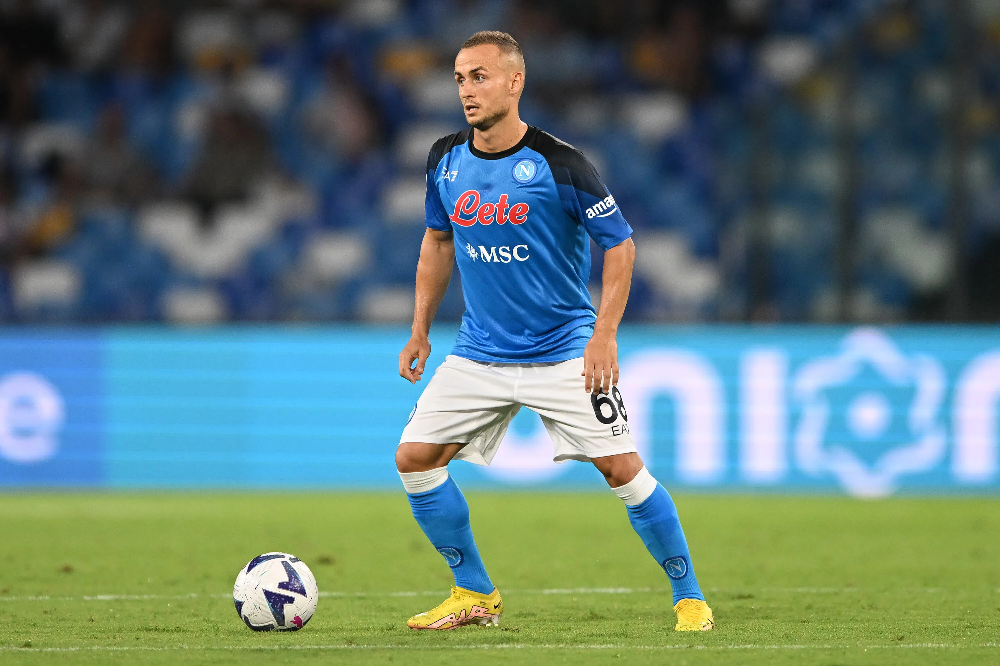
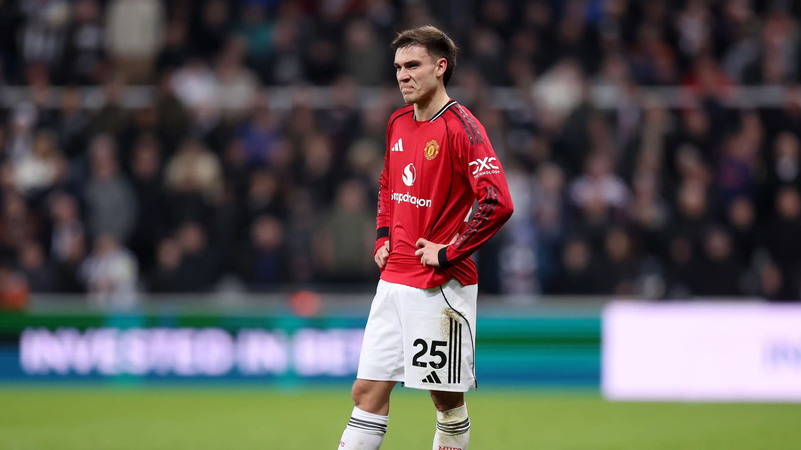
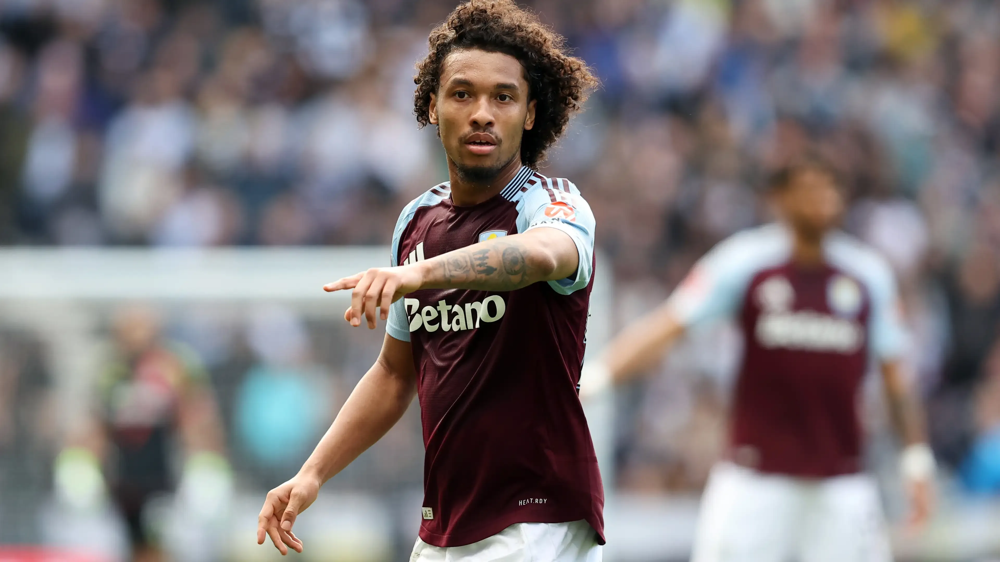
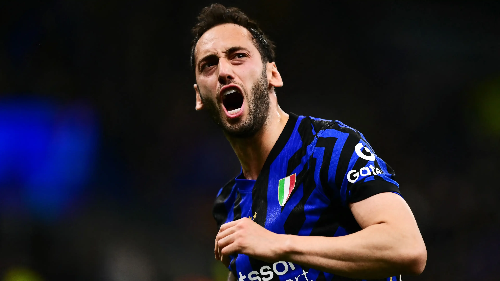
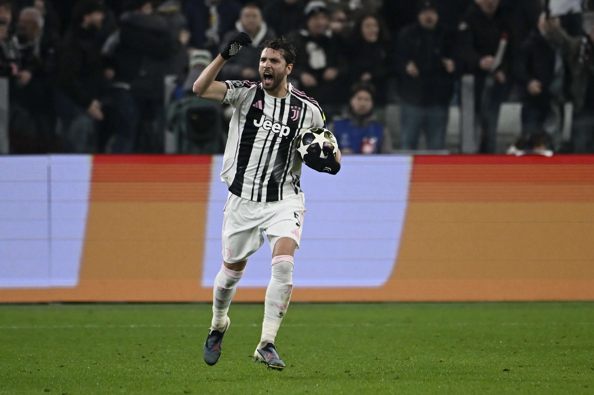
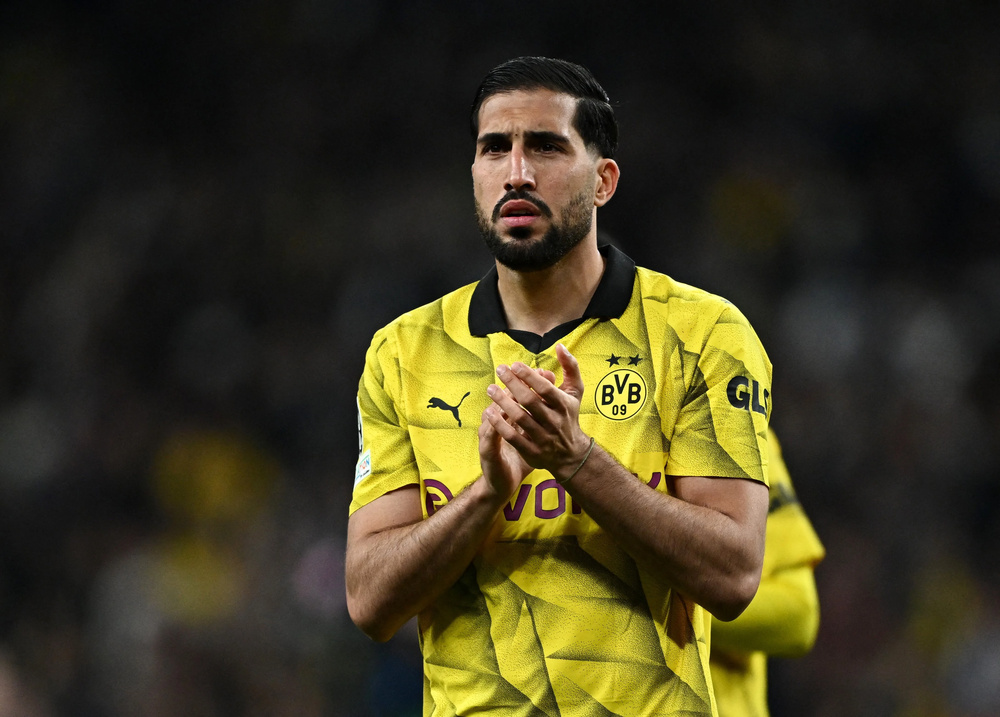

 Lobotka
Lobotka
 Ugarte
Ugarte
 Kamara
Kamara
 Çalhanoglu
Çalhanoglu
 Locatelli
Locatelli
 Borussia Dortmund · Germany · 32
Borussia Dortmund · Germany · 32
The grid is the hero and everything else is a border around it. The position code is set at 92px because it is the one fact that explains the ten boxes, and the decision runs the full width of the footer at a size nothing else in the app reaches. The stadium is full-bleed under all of it. Nothing here is subtle, which is the point — the version to beat.
Ugarte
Manchester United · Uruguay · 25
CDM
Can
Borussia Dortmund · Germany · 32
CDM
The still of the moment the built screen will animate — the footballer out of the box, lit, at the size a face has to be for the reveal to land. Drawing the banker's player at exactly the same weight is the whole argument of the frame: you are comparing two faces, not a face and a line of text. The five boxes still shut sit along the footer as the third option.
Can
Borussia Dortmund


 CDM
CDM
The room on the left, your decision on the right, split by a surface step rather than a rule — the lobby's own diptych at draft scale. Both buttons run the full half-width and stack, which makes them the largest controls in the app by a distance. The trade is that the boxes shrink to make room, and they are the thing everyone is actually watching.
Borussia Dortmund · 32
HaalandViníciusAlissonFour tiles, and every one of them is doing a job the round needs: the boxes, the offer, the decision, the eleven. It is the most information any of these twenty frames carries without feeling crowded, and the tile borders do the separating that hairlines do elsewhere. The cost is that nothing is big — the loudest thing on it is a 34px position code.
Ten cards of one kind, five of them face down. Every opened box carries its full caption — name, club, box number — so the round reads as a set of specimens rather than a scoreboard. It is the only frame where a closed box is as tall as an open one, which is what makes the five shut ones feel like withheld cards rather than gaps.
HaalandViníciusAlissonThe only frame that answers "why CDM?" spatially — the slot the round fills is lit on your own 4-2-3-1, at a bigger diameter than the ten around it, so the boxes read as candidates for a specific hole rather than a generic draw. Useful in round four; less so in round eleven when there is only one hole left and the diagram has nothing to say.
Stanislav LobotkaNapoliManuel UgarteYoursBoubacar KamaraAston VillaHakan ÇalhanogluInterManuel LocatelliJuventus
Borussia Dortmund · Germany · 32 · CDM
The ten boxes as a numbered list, shut ones included and holding their place in the order. Reading it top to bottom tells you exactly which numbers are still live, which no grid does as fast. What it loses is the physical thing — an index of boxes is a table of contents, and the round stops feeling like something being opened.
Four numerals at 118px across a ruled band. It works here in a way it could not on Free Pick, because this format genuinely has numbers worth that size — the slot, the boxes left, the round, the clock — and none of them are data-model facts. Read the whole top row and you know the round without looking at anything else.
Instrumented: turn order, your eleven as a list, and a per-round log of who opened what and what they did about it. The log is the frame's real proposal — it is the one place the four-step sequence is legible after the fact, and it makes the case that a single narrator line is thin for this format. Against it: three rails and a bench is a lot of chrome around one decision.
Every drafter's eleven side by side, with what they did this round tagged underneath. This is the only frame that makes the format's real texture visible — five people all drafting the same slot in the same round, two of them gambling — and it is a strong argument that the tabs on the other draft screens are the wrong shape here. The elevens are lists, though, and a list is not a shape.
Can Dortmund · 32
The four-step sequence drawn as four columns, with the two behind you dimmed and the one in front of you live. It is the only frame a first-time drafter could follow with nobody explaining the format, and it is the clearest statement of what "go back to the boxes" actually costs. It also spends three quarters of the screen on steps that are already over.
The format's own name at 132px over a stadium running at 80% — the loudest frame in the set by a distance, and the closest thing here to a television title card. The boxes are demoted to a strip along the bottom, which is the trade: it looks like the moment, and it tells you almost nothing about the round you are in.
Can Dortmund · 32
Five columns, one per drafter, each showing the box they got and what they did about it — the round as a set of parallel situations rather than one person's turn. Two of the five are hearing an offer at the same moment you are, which no other frame makes visible, and which is true every round. It leaves the five shut boxes competing for the bottom half.
The offer put in the banker's own mouth, and the buttons renamed to the two words the format is named after. It is the most fun frame here and the most dangerous one: the copy law is professional and matter-of-fact, and a talking banker is a character. Worth having on the wall precisely so the line gets drawn deliberately rather than by default.
Every one of them a CDM.
Five are still shut.
The banker says Emre Can.
One of those is a decision.
The round stated in three lines of display type and nothing else, over a scanline-masked stadium. It is the most legible frame at a glance and the least useful one at any distance closer than a glance — there is no grid to read, only a summary of one. Included because it proves the round can be said in a sentence.
Four questions with the answers drawn rather than written — the footballer's actual face sits where the answer would be. It teaches the format faster than anything else here. It is also the only frame that says "there is no third go" out loud, which is a rule the other nineteen leave you to infer.
Hakan ÇalhanogluPriya · stuckManuel UgarteYou · hearing itManuel LocatelliSam · stuckStanislav LobotkaBot 1 · stuckBoubacar KamaraBot 2 · hearing itBorussia DortmundThe round written out the way a matchday programme would set it: who opened what, in order, with what they did in the right-hand column. It is the most complete account of the round on offer and the least urgent-looking — reading it, you would not know a nine-second clock was running.
HaalandViníciusAlissonThe Free Pick screen's own shipped shape with a box grid where the pool used to be — three hairline-divided columns, the eleven on the right behind drafter tabs, chat bottom-left. It is the safest frame here by a mile and the only one that ports as a modification of code that already exists. Whether that is a virtue depends on whether this format should look like the others.
Borussia Dortmund · 32
The whole situation narrated back to you in three sentences with every name live in the prose. It is the only frame that spells out the consequence of refusing, and the only one a drafter could act on without knowing the rules. By round eleven you will have read the same paragraph eleven times, which is the standing objection to this shape.
Borussia Dortmund · 32
Every part of the round given its own bordered panel and labelled, with the offer taking a full-height column down the right. The per-seat status chips are the useful invention — "Deciding" against "Stuck" tells you the round is still live for two people. It is also the most generic frame here; nothing about it could only be Deal or No Deal.